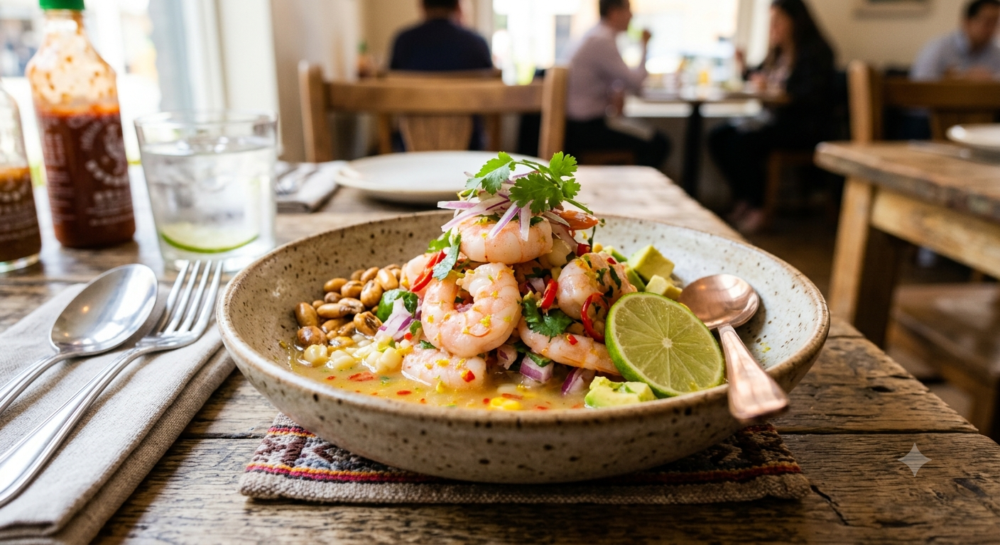

Ceviche de Camarones

El ceviche de camarones es uno de los platos marinos más frescos y
queridos en todo el mundo. Esta receta te enseñará a prepararlo al
estilo tradicional, logrando que queden perfectamente sazonados y
aromáticos por fuera, pero muy jugosos y firmes por dentro.
Es el complemento ideal para galletas saladas, patacones o simplemente para
disfrutar solo con tu bebida favorita en una tarde con amigos.
Ingredientes
- Camarones limpios y pelados (la cantidad que te vayas a comer)
- Limones frescos (para exprimir el jugo suficiente)
- Cebolla morada cortada en plumas finas
- Cilantro fresco picado finamente
- Tomate picado en cubos pequeños (opcional)
- Sal y pimienta al gusto
Pasos a seguir
- Limpiar y preparar: Lava bien los camarones lim
pios. Asegúrate de retirarles la vena negra del lomo para un acab
ado más pulcro.
- Cocinar los camarones: Pon a hervir agua con u
na pizca de sal y cocina los camarones durante unos 2 o 3 minutos
hasta que se pongan rosados y firmes.
- Cortar la cocción: Retira los camarones del ag
ua hirviendo e introdúcelos de inmediato en un tazón con agua con
hielo para que no se pasen de cocción.
- Curtir la cebolla: Corta la cebolla en plumas f
inas y déjala remojar en agua fría con un toque de sal por unos 1
0 minutos para suavizar su sabor fuerte.
- Exprimir los limones: Exprime los limones en un
recipiente aparte cuidando de no presionar demasiado la cáscara
para que el jugo no se ponga amargo.
- Mezclar ingredientes: En un tazón grande coloca
los camarones escurridos, la cebolla enjuagada, el tomate en cub
os y el cilantro picado finamente.
- Marinar el ceviche: Baña toda la mezcla con el
jugo de limón fresco asegurando que cubra bien todos los ingredi
entes para su correcta integración.
- Sazonar y reposar: Añade sal y pimienta al gus
to, revuelve con cuidado y deja reposar en el refrigerador duran
te unos 15 minutos antes de comer.
- Servir: Retíralos de la nevera, repártelos
en copas o platos hondos, añade galletas saladas inmediatamente y sírve
los bien fríos.
Otras recetas